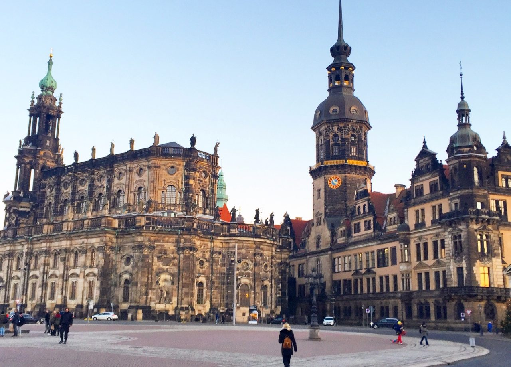

About Dresden
Dresden, the capital of Saxony, is one of Germany's most beautiful cities. Often called the "Florence of the Elbe," it is renowned for its stunning baroque architecture, world-class art collections, and its dramatic setting on the banks of the Elbe River. The city was almost completely destroyed in World War II but has been painstakingly rebuilt and restored since reunification.
Dresden is home to the Zwinger Palace, the Semperoper opera house, and the Frauenkirche — all magnificent examples of baroque and rococo architecture. It is also a gateway to Saxon Switzerland National Park.

Top Attractions
Zwinger Palace
A magnificent baroque palace complex housing several world-class museums, including the famous Old Masters Picture Gallery.
Frauenkirche
Dresden's iconic baroque church, destroyed in 1945 and rebuilt entirely from the original stones between 1994 and 2005. A powerful symbol of reconciliation.
Semperoper
One of the world's most beautiful opera houses, reopened in 1985 after post-war reconstruction. Guided tours are available daily.
Saxon Switzerland National Park
Dramatic sandstone rock formations just 30 minutes from Dresden by S-Bahn. The Bastei rock formation is one of Germany's most photographed landscapes.
Green Vault (Grünes Gewölbe)
One of the oldest museums in the world and home to one of Europe's largest collections of treasures — jewellery, gold, and precious objects from the Saxon electors.
Dresden Neustadt
The vibrant north side of the Elbe — a bohemian district with independent shops, street art, bars, and the lively Kunsthofpassage courtyard.